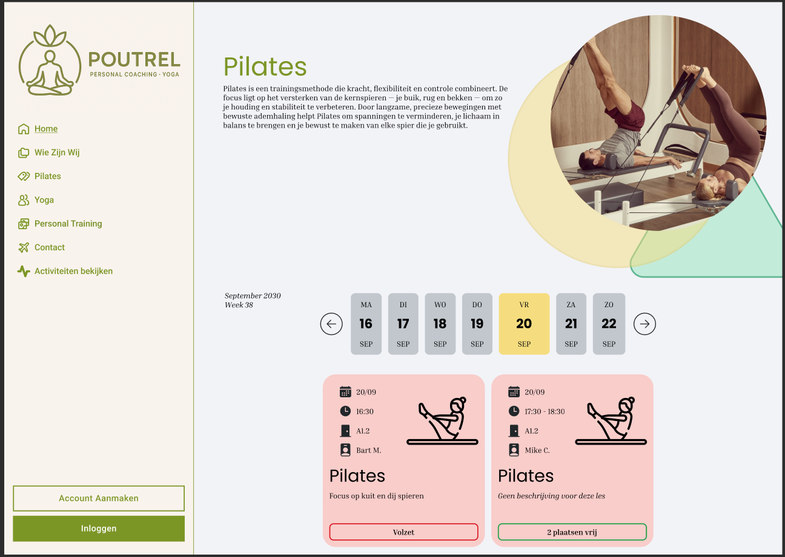
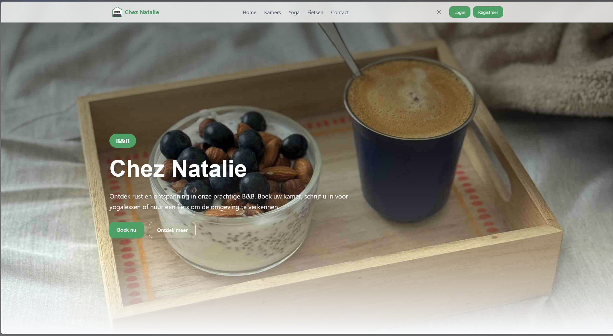
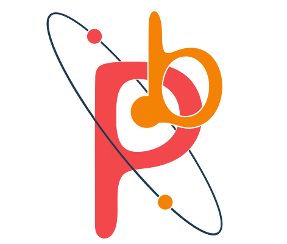
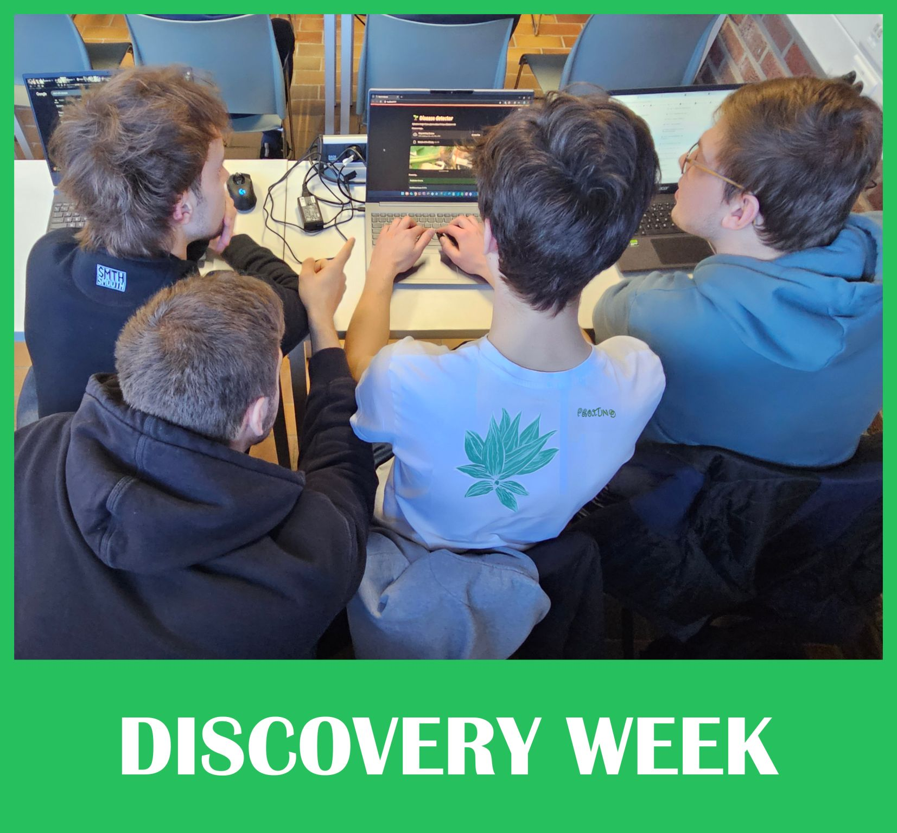
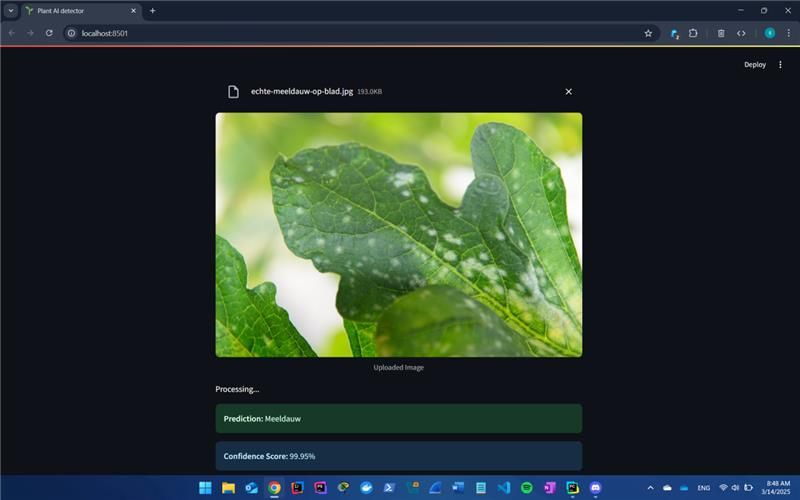

My Projects
Projects completed in Skills Integration Lab, moving from concept work and analysis to implementation and applied AI exploration.
Featured Projects

Poutrel
Context: In Skills Integration Lab, the team designed a digital concept for a pilates business. The goal was to translate business needs into a clear and usable platform concept.
What was created: A complete Figma prototype for the Poutrel website, supported by a data model and a use case diagram for booking pilates lessons.
Contribution: Main contributions were on the admin pages in the prototype and support on the use case diagram structure.
Learning: requirements analysis before coding, translating user journeys into screens, and collaborating on shared documentation standards.
Key takeaway: This project established analysis and design foundations used in later implementation work.

Chez Natalie
Context: In this follow-up Skills Integration Lab project, the team received an existing prototype, data model, and use case diagram, and had to realize it as a full Laravel web application.
What was created: A fully functional booking platform for a BnB where users can reserve rooms, yoga sessions, and bikes.
Contribution: Main responsibilities included seeders, yoga booking flows, yoga training session management, admin pages for yoga type/location/pricing, and final layout/design improvements.
Learning: converting analysis artifacts into production features, building maintainable CRUD/admin workflows, and coordinating implementation ownership in a group setting.
Key takeaway: This project shows progression from concept/design work to complete, functional delivery.

Periodic Beasts - Educational Game Concept
Context: This first-year Skills Integration Lab project explored how educational content can be transformed into an interactive game concept.
What was created: A chemistry game concept where players learn element logic through interaction and progression.
Contribution: Main contributions were world-building, story structure, NPC dialogue writing, visual direction, and logo creation.
Learning: creative collaboration, narrative design in team projects, and translating educational ideas into gameplay.
Key takeaway: This project reflects early development of communication and creative teamwork skills.


Plant Disease Detection AI
Context: During Discovery Week inside Skills Integration Lab, the focus was rapid experimentation with AI for real-world classification tasks.
What was created: A project that explored image-based plant disease classification using Python models, with Streamlit used to present outcomes in an accessible interface.
Contribution: Main responsibilities included collecting training images and training the model used in the prototype.
Learning: end-to-end ML workflow thinking, experimentation, and communicating technical outcomes in a user-friendly way.
LinkedIn post: View Project
Key takeaway: This project connects core software skills to AI-oriented experimentation and future specialization goals.
Next: Skills
Together, these projects show progress in analysis, realization, communication, and professional collaboration. The Skills page summarizes this in a structured way.
Continue to Skills